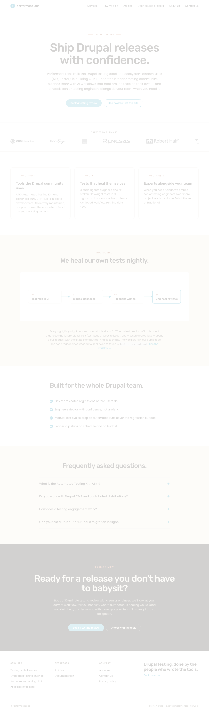

PASS
| Viewport | Pixels different | Delta % | Status |
|---|---|---|---|
| 375 × 667 (full page 6163 tall) | 10,149 | 0.44% | MATCH (intended sub-perceptual tightening) |
| 1280 × 800 | 0 | 0.00% | MATCH (desktop unchanged) |
-0.6px → -0.8px). The change is sub-perceptual at normal reading distance; the 0.44% pixel delta is entirely subpixel rasterization differences in H2 glyph positions across the page.@media (max-width: 767px).Drag the slider to wipe between pre-fix (left of slider) and post-fix (right of slider).
Desktop view computed letter-spacing: -1px both pre and post (the mobile media query does not apply at this width). 0 pixels differ.

| Section | Viewport | Status | Description |
|---|---|---|---|
All .section-head h2 instances | 375 | MATCH (intentional) | Letter-spacing tightened from -0.6px to -0.8px per design brief display-md mobile spec. Sub-perceptual; aggregate 0.44% diff across full-page screenshot. |
| All sections | 1280 | MATCH | No change — change is scoped to mobile media query. |
5 preview files received an identical single-character value swap (-0.6px → -0.8px) on the same mobile media-query selector. Rendering one representative file (homepage.html) is sufficient because the change is mechanically uniform; the other 4 files were grep-verified by T (handoff-T §T1-B) to contain the same post-fix value at the same selector inside the same media query. Token compliance verified via computed-style readback on the sample.